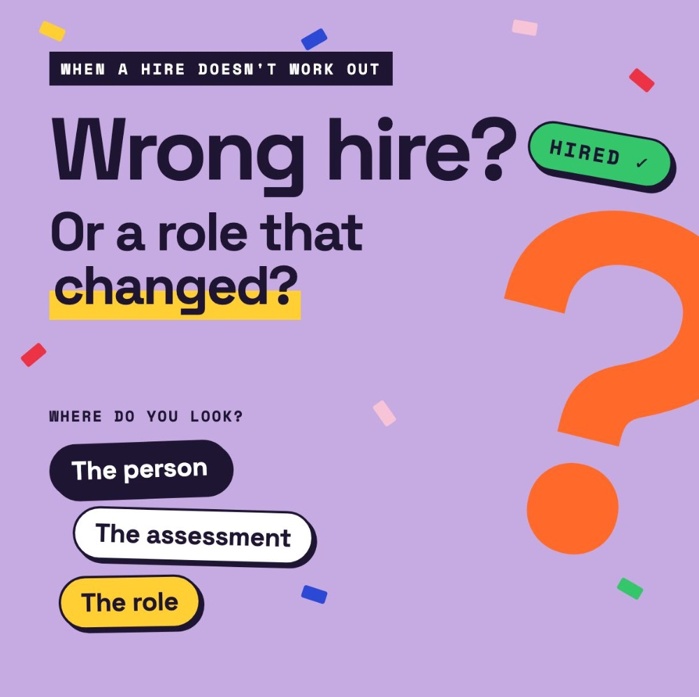

גייסתי אותו. כמה חודשים אחר כך, הייתי שותף להחלטה לסיים את העסקתו.

הוא היה איש מכירות שבאמת האמנתי בו. הוא עבר את כל תהליך הגיוס שלנו, פגש את האנשים הנכונים, ונתן לנו את כל הסיבות לחשוב שהוא יצליח. עם הזמן, המספרים שלו סיפרו סיפור אחר.
זו הייתה ההחלטה העסקית הנכונה. היא גם הייתה החלטה קשה. האמנתי בו, ורציתי לוודא שהוא עוזב בתחושה שכיבדו אותו.
אבל אחרי שזה נגמר, המשכתי לחזור להחלטת הגיוס.
האם פספסתי סימן? שאלתי את השאלות הלא נכונות? סמכתי יותר מדי על ההתרשמות שלי? או שהבעיה הייתה במקום אחר: פער בין התפקיד שגייסנו אליו לבין מה שהצלחה בתפקיד הזה דרשה בסופו של דבר?
אלה שתי בעיות שונות מאוד. אחת היא כשל בהערכה. השנייה היא כשל בהגדרת התפקיד.
והן דורשות פתרונות שונים מאוד.
מה לקחתי מזה:
← תוצאה רעה לא אומרת אוטומטית שההחלטה הייתה רעה. אבל היא אף פעם לא סיבה להפסיק לבחון אותה.
← להסכים עם המנהל המגייס על קריטריונים מדידים להצלחה בחצי השנה הראשונה, עוד לפני הראיון הראשון.
← לחזור לקריטריונים האלה אחרי 90 יום, כשלתפקיד כבר היה זמן להשתנות.
כשגיוס לא מצליח, איפה אתם.ן מחפשים קודם: באדם, בתהליך ההערכה, או בסביבה שציפינו שהוא יצליח בה?